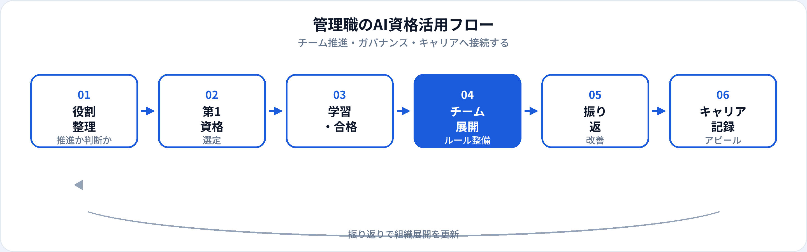

管理職・マネージャーにとってAIは、自分の業務効率化だけでなく、チームの生産性・リスク管理・投資判断まで広がるテーマになっています。「推進は部下に任せればよい」と思いがちですが、リーダーが共通言語を持たないと、ルール整備や研修設計の質が上がりにくいのが現実です。本記事では、管理職が取るべきAI資格を取得タイミングと役割別の選び方から整理し、2026年6月時点でキャリアへの活かし方まで解説します。資格の意味や社内推進の詳細は管理職・経営者向け学習ガイド、3資格比較は初心者向け比較記事も参照してください。
管理職にAI資格が効く理由
管理職の評価は「自分の成果」から「チームの成果とリスク管理」へシフトします。AI資格は、コードを書くためではなく、判断・説明・推進の質を上げる学習になります。
技術者・IT部門との対話
ベンダー提案や社内AI案件の会議で、専門用語に振り回されず本質的な論点に集中できる。
ガバナンス・リスク管理
個人情報・著作権・ハルシネーションなど、チームルールを設計・説明する土台になる。
リーダーとしてのメッセージ
「自分が先に学ぶ」姿勢が、部下のAIリテラシー向上と組織文化づくりに効く。
試験対策はこちら
取得タイミング
| タイミング | おすすめの動き | 第一候補の目安 |
|---|---|---|
| 管理職就任前・昇進前 | リーダーシップの差別化材料として取得 | 生成AIパスポート |
| チームAI活用を始める前 | ルール・研修の骨子を自分で理解してから展開 | 生成AIパスポート |
| 社内AI推進プロジェクト参画時 | 投資判断・ベンダー選定の説明材料に | 生成AIパスポート |
| 全社展開のパイロット期 | 管理職が先行取得し、成功パターンを固める | 生成AIパスポート · 法人展開ガイド |
| 評価面談・人事異動前 | 資格＋チーム展開実績をセットで記載 | 第二候補は役割次第 |
法人制度で受験支援がある場合は、社内制度ガイドに合わせて計画を立ててください。
おすすめ資格の比較
| 資格 | 管理職との相性 | 学習時間目安 | 向いている管理職 |
|---|---|---|---|
| 生成AIパスポート | ◎ 第一候補 | 20〜40時間 | ラインマネージャー、部門長、経営層 |
| ITパスポート | ○ IT連携が多い場合 | 40〜80時間 | 情シス管掌、DX推進、非IT部門の管理職 |
| G検定 | ○ AI・データ管掌時 | 80〜150時間 | AI PM管掌、データ部門長、技術寄り管理職 |
第1候補の選び方
-
第1：生成AIパスポート（基本）
ほとんどの管理職の第一候補。リスク・ガバナンス・業務活用を短時間で整理でき、チーム展開に直結。
-
第2（状況次第）：ITパスポート
IT部門・DX推進と連携する管理職。社内システム・セキュリティ基礎の共通言語が必要な場合。
-
第2（状況次第）：G検定
AIプロダクト・データ部門を管掌、またはAI PM的な役割を担う管理職。
| あなたの役割 | 第1候補 |
|---|---|
| ラインマネージャー（5〜15名） | 生成AIパスポート |
| 部門長・事業部長 | 生成AIパスポート（投資・リスク判断に重点） |
| 経営層・取締役 | 生成AIパスポート · 経営者ガイド |
| AI・データ部門の管理職 | 生成AIパスポート → G検定 |
| 人事・総務（全社研修設計） | 生成AIパスポート · 人事向け記事 |
管理職の活用フロー

管理職は学習→チーム展開→振り返り→記録のサイクルが重要です。資格は「学習」の柱、チームルール整備が「展開」の柱になります。
役割別：ラインマネージャー・部門長・経営層
ラインマネージャー
1on1・業務レビューでAI利用ルールを浸透。部下の試行錯誤を安全に支援。成果をチーム単位で記録。
部門長
ベンダー選定・予算申請・KPI設計にAIリテラシーを活用。部門横断の成功事例を横展開。
経営層
対外説明・株主・取引先へのAI方針説明。全社ガバナンスのトップメッセージを発信。
チーム展開の進め方
| ステップ | 管理職がやること | 資格学習との接続 |
|---|---|---|
| 1. 自分が先に取得 | 生成AIパスポートで用語・リスクを整理 | 学習内容がそのまま研修骨子になる |
| 2. チームルール策定 | 入力禁止情報、確認フロー、利用ツールを明文化 | 資格のガバナンス章がベース |
| 3. パイロット業務を1つ | 議事録・報告書・FAQなど低リスク業務から | 成功事例を評価面談に記載 |
| 4. 振り返りと横展開 | 月次で効果測定、他チームへ共有 | 第二候補の要否を判断 |
合格後の実践（3か月）
1か月目
チーム向けAI利用ルール（1枚）を作成。キックオフで資格で学んだリスクを説明。
2か月目
パイロット業務1つをチームで試行。週次で振り返り、ルールを微調整。
3か月目
成果を数値化（時間短縮、品質改善等）。上長・人事への報告材料に。
管理職が押さえるべき注意点
| やるべきこと | 避けるべきこと |
|---|---|
| 自分が先に学び、ルールを示す | 「IT部門任せ」「部下任せ」に丸投げ |
| チームの試行を安全に支援 | 資格があるから社内規定を無視 |
| 成果をチーム単位で記録 | 個人の資格取得だけで評価を求める |
| 法務・情シスと連携してルール整備 | 個人の無料AIに社外秘を入力させる |
昇進・社内評価・転職でのアピール
昇進・評価面談
例：「生成AIパスポート（2026年○月）取得。チーム5名向けAI利用ルールを整備し、議事録作成時間を40%短縮。」
管理職の評価は資格＋チーム成果＋リスク管理のセットが効きます。記載例は履歴書ガイドを参照。
社内異動・DX推進ポジション
AI推進・DX推進のポジションでは、資格に加えチーム展開実績が決め手になりやすい。キャリア活用法も併読。
転職
マネージャー職への転職では、前職のマネジメント経験＋AIリテラシーの組み合わせが差別化になる。30代向けは別記事も参照。
資格だけでは足りない点
管理職の評価はチーム成果・人材育成・リスク管理です。資格はリテラシーと推進意欲の証明になりますが、現場の調整力・組織政治・実行力は現場で培う領域です。合格後は、小さなチーム展開から始め、上長・法務・情シスのフィードバックをもらうことを優先してください。
よくある質問
管理職におすすめのAI資格はどれ？
多くの管理職にとって生成AIパスポートが第一候補。IT連携が多い場合はITパスポート、AI・データ管掌ならG検定も検討。
経営者も同じ資格でよい？
はい。経営層も生成AIパスポートを第一候補にするケースが多い。詳細は管理職・経営者ガイドを参照。
部下に先に取らせるべき？上司が先？
管理職が先に取得する方が効果的なことが多い。ルール整備・研修設計・投資判断の説得力が増す。
G検定は管理職に必要？
必須ではない。一般的なラインマネージャーなら生成AIパスポートで十分。AI・データ部門管掌や技術議論が多い場合はG検定も有効。